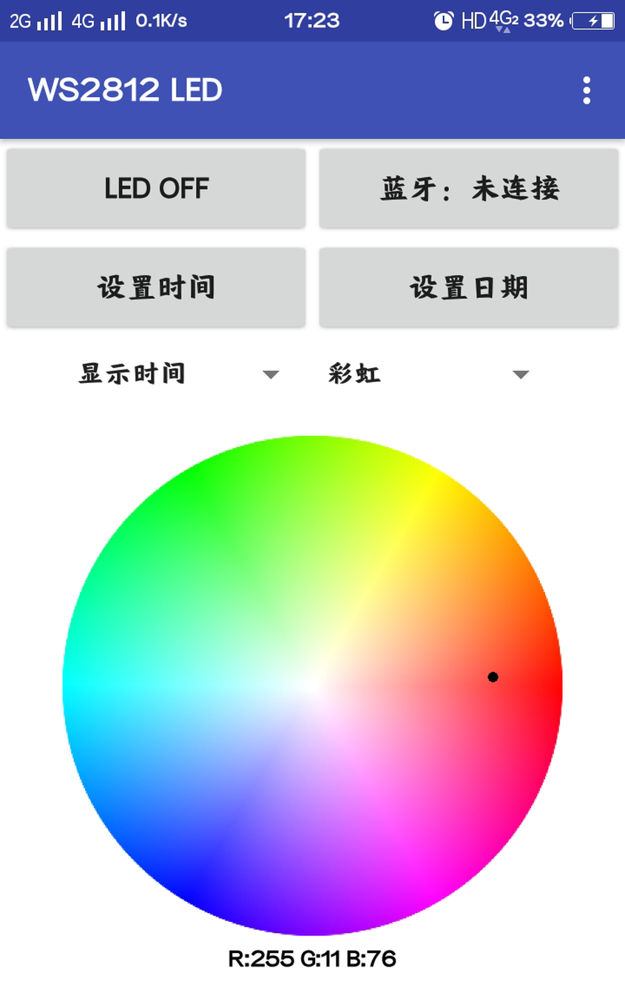
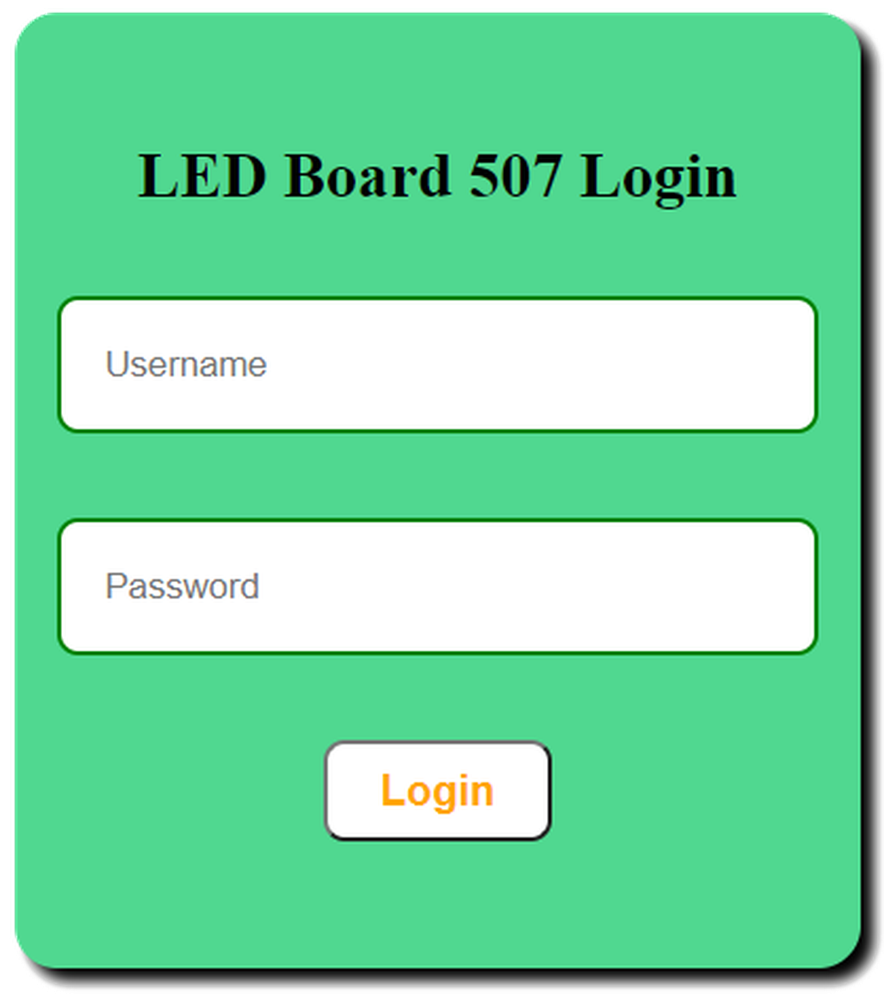
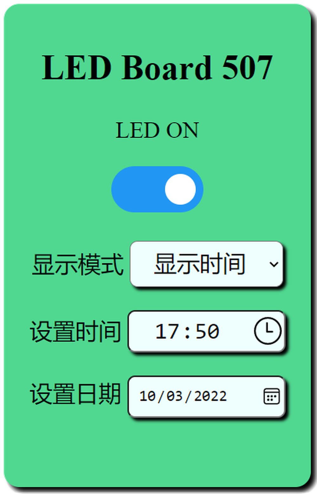

第二章——代码及使用
有关代码部分我也比较建议大家前往我的GitHub 仓库下载使用，其中 21x7 版本的使用了 WIFI，如果你不想使用 WIFI，仅仅使用 APP 的话，可以使用 19x7 的版本。
1. 项目文件及代码
该项目的代码文件结构如下：
- HeaderConfig.h
- LEDBoard21x7.ino
- LEDFunction.h
- WIFI.h
- data
- favicon.png
- index.html
- index.js
- login.html
- sytle.css
其中HeaderConfig.h主要包含了全局变量的声明，LEDBoard21x7.ino就是主程序了，LEDFunction.h主要是灯板的控制以及光效函数，WIFI.h包含了有关 WIFI 服务器和 websocket 的配置，data文件夹包含了有关网页的文件。
本项目同样有很大的难度，包括网页设计，WIFI 服务器搭建，以及 SPIFFS 的使用，相关内容可参考上一个项目NFC 门禁卡。这里我不做详细介绍了，三言两语也讲不清楚，大家可以自行学习。
2. 灯板的使用
灯板内置了三种显示模式，包括：
- 显示时间
- 显示日期
- 显示灯效
灯板支持四种控制模式，包括：
- 按钮
- 手机 APP
- WIFI
- 定时任务
后两种模式可以设置灯板的时间和日期，而按钮只能切换模式和背景，定时任务是用来定时开关灯板的。
下面我介绍每一种控制模式的使用方法。
2.1 按钮控制
| 按钮 | 功能 |
|---|---|
| 按钮一 | 打开/关闭灯板 |
| 按钮二 | 设置背景模式 |
| 按钮三 | 上一个显示模式 |
| 按钮四 | 下一个显示模式 |
值得注意的是，因为我把板子内置了 5 种背景模式，有彩虹模式，白云模式，海洋模式，岩浆模式，森林模式。根据我的观察，显示时间和显示日期需要比较浅的背景，所以在这两种模式下一直都是白云模式，不能更换背景的。
2.2 手机 APP
我使用了一个叫做MIT APP Inventor开源项目制作了这个手机 APP，该软件只支持安卓系统。
你可以通过这个链接下载安装使用。

在使用 APP 前，你需要先连接 ESP32 的蓝牙，我设置了蓝牙名称为LED Board 507，你可以通过更改LEDBoard21x7.ino文件中setup函数的下面一行更改设备蓝牙名称：
// 设置蓝牙名称
SerialBT.begin("LED Board 507");
连接蓝牙后你就可以通过这个 APP 控制灯板，相信大家看了就会使用这个 APP，挺简单的，这里我不做介绍了。
2.3 WIFI
这里 WIFI 的使用和 NFC 的 WIFI 开门是相似的，也需要先登录验证。在连接相同路由器的情况下，你可以通过 ESP32 的主机名进行访问，我设置的主机名是ledboard-507，即，你可以通过http://ledboard-507访问。
你可以通过更改WIFI.h文件下的WIFI_INIT的以下几行更改 ESP32 的主机名：
// change hostname to ledboard-507
String hostname = "ledboard-507";
WiFi.mode(WIFI_STA);
WiFi.config(INADDR_NONE, INADDR_NONE, INADDR_NONE, INADDR_NONE);
WiFi.setHostname(hostname.c_str());
登录后的需要身份验证，默认用户名是admin，默认密码是dinghao666：

登录后就可以控制灯板了：

相信大家看了这个 UI 应该也知道怎么用了，这里我也不做详细介绍了。
2.4 定时任务
DS3231 拥有两个内置的闹钟，这非常适合用来作为定时器，但是为了提高效率，我加入了使用了 DS3231 的中断。因为 DS3231 在闹铃时会触发三号中断引脚，但是这个引脚在我买的 DS3231 模块上没有焊接出来，因此我需要自己焊接，同时添加一个 10K 的上拉电阻。
我同时使用了两个闹钟，一个闹钟用来在晚上12:00关闭灯板，另一个用来在中午12:00开启灯板，大家可以通过更改LEDBoard21x7.ino文件中setup函数的以下几行重新设置这个时间：
attachInterrupt(digitalPinToInterrupt(INT_PIN), alarm_irq, FALLING);
rtc.setAlarm1(DateTime(2021, 12, 28, 0, 0, 0), DS3231_A1_Hour); // 每日凌晨12点关闭LED
rtc.setAlarm2(DateTime(2021, 12, 28, 8, 0, 0), DS3231_A2_Hour); // 每日早晨8点打开LED